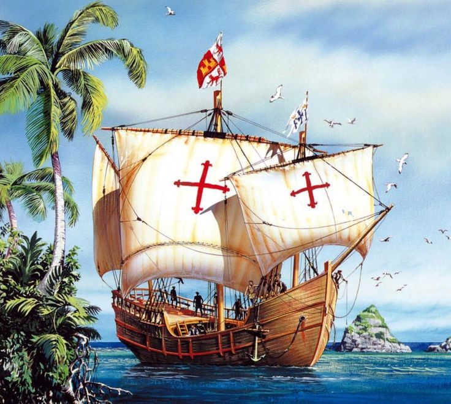
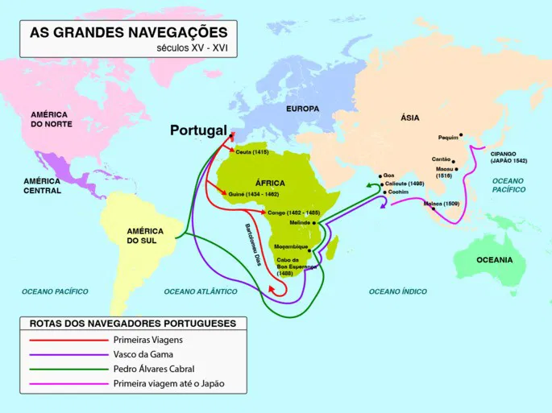
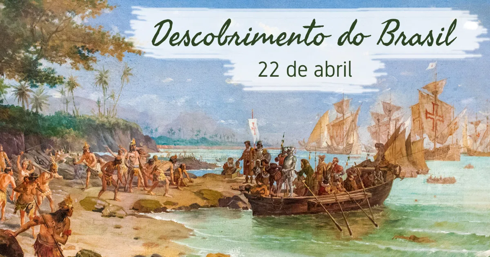
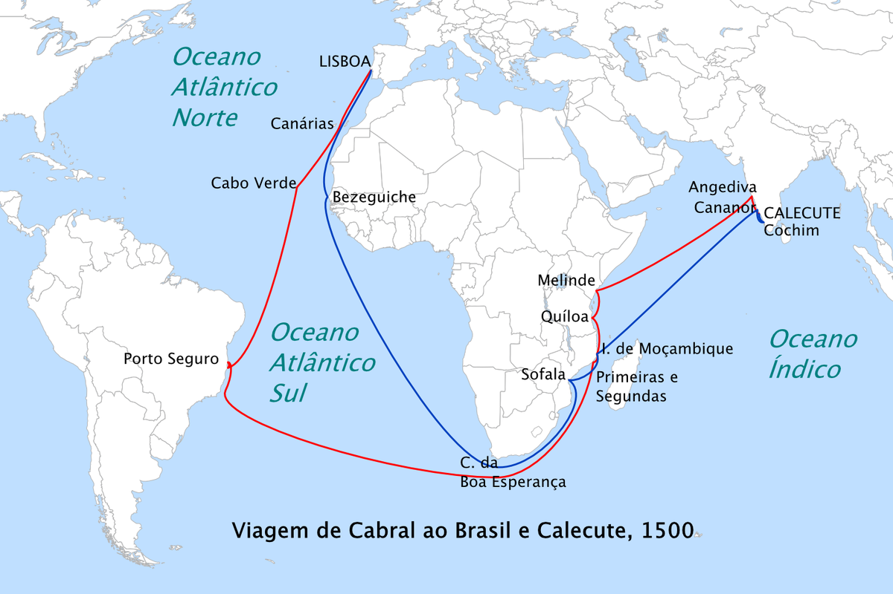

A Chegada dos Portugueses
A chegada dos portugueses ao Brasil foi um dos maiores momentos das grandes navegações, processo iniciado pelos portugueses no século XV.
As grandes navegações são como conhecemos as expedições exploratórias, organizadas pelos portugueses, no Oceano Atlântico ao longo desse século. Isso só foi possível graças a uma série de fatores.
Primeiro, a unificação territorial. O território nacional de Portugal foi consolidado em 1249, quando o rei d. Afonso III conseguiu conquistar definitivamente Algarve (região sul de Portugal) dos mouros. Outro fator importante foi a estabilidade política que o país experimentou a partir do final do século XIV.
Entre 1383 e 1385, aconteceu no país a Revolução de Avis, responsável por colocar João, mestre de Avis, no trono de Portugal. Com essa revolução, a dinastia Borgonha teve fim, e a nova dinastia, a de Avis, iniciou-se. Portugal experimentou uma grande estabilidade política que possibilitou ao país vivenciar um desenvolvimento comercial e tecnológico, o que incluiu o desenvolvimento náutico.


Além disso, a localização geográfica de Portugal garantia acesso fácil às correntes marítimas do Oceano Atlântico, e o desenvolvimento comercial de Lisboa tornava a cidade um centro importante. Por fim, a necessidade de encontrar uma nova rota para o Oriente já que a usual, que passava por Constantinopla, havia sido fechada em 1453 reforçou a exploração dos oceanos pelos portugueses.
Esses fatores nos ajudam a entender por que Portugal se lançou pioneiramente na exploração dos oceanos e por que as grandes “descobertas” do século XV foram realizadas por portugueses. A única grande exceção foi a expedição de Cristóvão Colombo, navegante genovês que chegou à América, em 12 de outubro de 1492, em uma empreitada financiada pela Espanha (Portugal recusou-se a financiar a expedição de Colombo).
No contexto da chegada dos portugueses ao Brasil, Portugal estava desfrutando o auge do comércio de especiarias da Índia, mercadorias oriundas da Ásia como pimenta-do-reino, noz-moscada, perfumes e incenso, que, por sua raridade no mercado europeu, eram valiosíssimas. A procura por uma nova rota para Índia era justamente para garantir o acesso a essas mercadorias.
Depois que os espanhóis chegaram à América, em 1492, as terras recém-descobertas começaram a ser disputadas por portugueses e espanhóis. Foi dessa preocupação dos portugueses em conter a expansão espanhola que saíram dois acordos: a bula Inter Caetera (1493) e o Tratado de Tordesilhas (1494).
Esses dois documentos dividiram as novas terras entre Portugal e Espanha, e o último estipulou a seguinte divisão: a 370 léguas, a oeste do arquipélago de Cabo Verde, seria passada uma linha imaginária. As terras a oeste dessa linha seriam espanholas, e as terras a leste dessa linha seriam portuguesas.
Como foi o "Descobrimento do Brasil"?

Nesse contexto de exploração das possibilidades de terra no oeste e de realização de comércio na Índia, Portugal organizou uma nova expedição. O nome escolhido para liderá-la foi o de Pedro Álvares Cabral, cavaleiro da Ordem de Cristo desde 1494 (importante ordem de cavaleiros). Os historiadores não sabem ao certo por que Cabral foi escolhido para ser o líder da expedição, já que existiam outros navegadores mais experientes que ele, como Bartolomeu Dias.
A expedição de Pedro Álvares Cabral contava com 13 embarcações, sendo nove naus, três caravelas e uma naveta de mantimentos. Os líderes de cada uma das embarcações eram: Pedro Álvares Cabral, Sancho Tovar, Simão de Miranda de Azevedo, Aires Gomes da Silva, Nicolau Coelho, Nuno Leitão da Cunha, Vasco de Ataíde, Bartolomeu Dias, Diogo Dias, Gaspar de Lemos, Luís Pires, Simão de Pina e Pero de Ataíde.
A expedição também contava com 1200 a 1500 homens, que zarparam de Lisboa no dia 9 de março de 1500. Após zarpar, a expedição navegou diretamente para o arquipélago de Cabo Verde, portanto, tomou uma rota distante da costa africana. A rota usual dos portugueses no rumo da Índia era mais próxima da costa, mas o caminho distinto sugere que eles tinham um roteiro diferente das demais expedições.

Apesar de terem avistado terra no dia 22 de abril, foi só no dia seguinte que Cabral decidiu enviar homens, e foi aí que os primeiros contatos entre portugueses e nativos aconteceram. O relato de Pero Vaz de Caminha sobre eles afirmou que “eram pardos, todos nus, sem coisa alguma que lhes cobrisse as suas vergonhas. Traziam nas mãos arcos e flechas”. Essa primeira expedição que marcou os contatos iniciais entre portugueses e nativos foi comandada por Nicolau Coelho. Ele e outros homens foram enviados para as margens da praia, em um bote, a fim de estabelecer uma relação com os indígenas, e esses contatos, naturalmente, foram pacíficos.
O contato foi calmo, houve troca de presentes entre as duas partes, e alguns dos indígenas foram levados à embarcação onde estava o capitão-mor, Cabral, para que ele os conhecesse. Foram-lhes dados alimentos e vinho, mas eles rejeitaram a comida e não gostaram do que experimentaram, segundo o relato de Caminha.
Os portugueses seguiram mais alguns dias explorando a costa brasileira. No dia 26 de abril, um domingo, celebraram a primeira missa no Brasil, realizada pelo frei Henrique de Coimbra. Depois, os comandantes da expedição decidiram enviar uma embarcação para Portugal com a notícia do achamento da nova terra. Pero Vaz de Caminha também foi nomeado para relatar, com detalhes, as novidades das terras encontradas. No dia 2 de maio, a expedição de Cabral partiu do Brasil em direção à Índia. O rei português, d. Manoel I, ficou sabendo da notícia do achamento da nova terra ainda em 1500. Apesar disso, o Brasil ficou em segundo plano, uma vez que a prioridade portuguesa, naquele momento, era continuar o comércio com a Índia.
Dia do Descobrimento do Brasil
O dia do descobrimento do brasil ocorre anualmente em 22 de abril. Isso porque essa data os historiadores definem como a chegada dos portugueses ao brasil, em 22 de abril de 1500. esse evento marcou inicio da presença portuguesa no Brasil, dando inicio também ao período da sua colonização. a chegada dos portugueses foram resultados das grandes navegações, processo de exploração oceânica que permitiu os europeus explorarem o oceano atlântico, dando-lhes a possibilidade de chegar á Índia e á América, até então desconhecida para os europeus.
O dia 22 de abril é uma data importante para a história do brasil, no entanto, a data não é considerada feriado nacional. No passado, ela já havia sido considerada dessa forma, mas deixou de sê-lo, em 1930, por ordem do governo de Getúlio Vargas. O dia do descobrimento foi considerado feriado nacional no período da Primeira República.